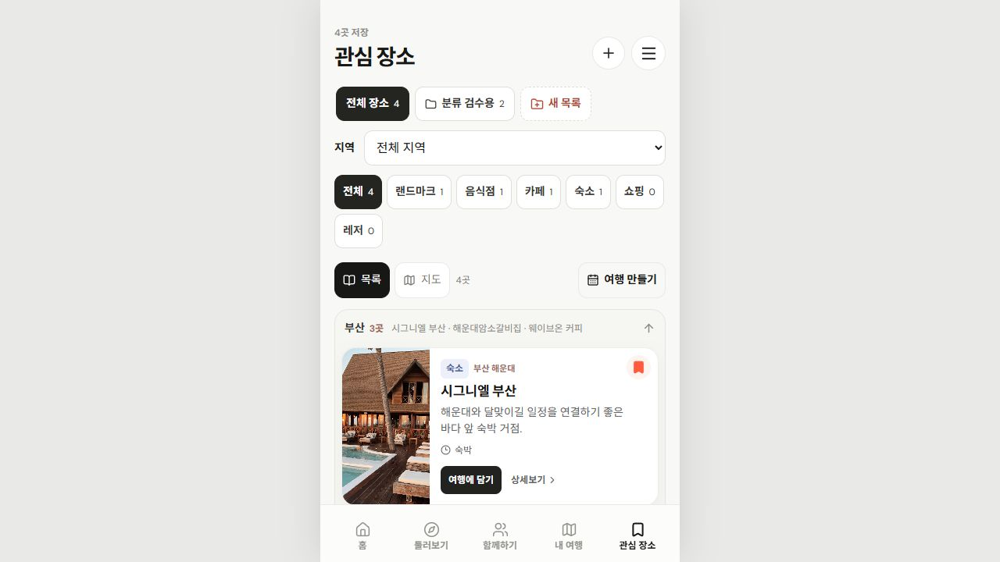
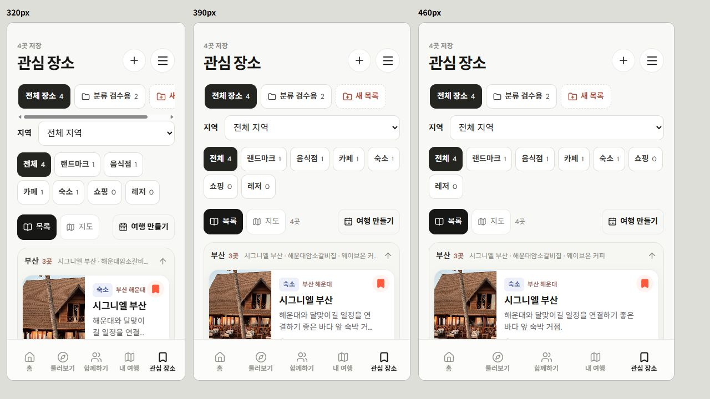

관심 장소: 저장 목록 우선
2026-10-29 · 로컬만 반영 · Git 업로드·배포 없음
화면 순서
관심 장소 제목·저장 수 → 내 목록 → 지역 → 종류 → 목록/지도＋작은 여행 만들기 버튼 → 지역별 저장 카드. 기기 보관 안내는 목록 아래로 이동.
- 큰 TRIP MAKER 카드를 작은 44px 이상 버튼으로 변경. 기본 첫 화면에서 여행 생성 폼 제거.
- 여행 만들기 클릭 → 날짜별 담기 / 바로 만들기 → 기존 기간·지역·출발일·이름 확인. 같은 BottomSheet 안에서 화면 전환, 중복 팝업 없음.
- 기존 작성 중 DAY·방문 선택·순서·저장 보호 유지. 임의로 초안을 접거나 초기화하지 않음.
- 선택한 목록의 중복 이름·개수 행 제거. 장소 담기·빼기 / 목록 관리 두 버튼 유지. 목록 전체 여행 생성은 목록 관리 안으로 이동.
- 종류 버튼·카드·필터 보존. 현재 선택 목록＋지역＋종류를 목록과 지도에 같이 적용.
- 320px에서는 중복 개수 텍스트를 시각적으로 줄여 목록·지도·여행 버튼이 같은 행에 배치.
검수
- 기존 관련 검사28개 통과: 관심 목록·저장 여행 초안·구성·타이포.
- 웹 타입·production 빌드·네이티브 타입 통과.
- 별도5214 검수 저장 공간에서 확인. 음식점·숙소 등 기존4곳과 목록 유지, 새 여행 생성·자료 삭제·변경 저장 실행 없음.
- 기본460px의 첫 카드 상단444.8px, 큰 생성 카드0개, 여행 버튼 높이45.8px. 목록/지도 버튼과 같은 줄 배치.
- 320/390/460px iframe에서 필터·첫 카드·버튼 줄 확인. 실기기 검수는 별도.
- 일반·선택 목록, 목록 관리 열기/닫기, 전체 목록 여행 생성 진입 보존 확인.
- 여행 방식→기간 설정은 단일dialog. 설정 전환 시 포커스가 기간 버튼 안으로 이동하고 Escape/닫기 후 여행 만들기로 복귀.
- 부산＋음식점1곳 선택 시 목록·지도에1곳 반영.
로컬
관심 장소 · 음식점·숙소 저장 예시


고객 UI6파일 변경: App.tsx / SavedTripControls.tsx / saved-trip-builder.css / app-navigation.css / InterestCollections.tsx / interest-collections.css. 관리자·서버 계약·고객 저장 원본 변경 없음.